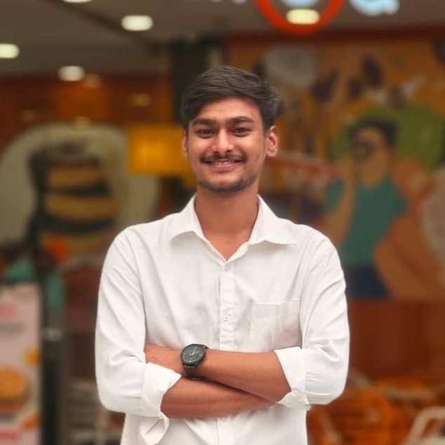

Researcher at IIT Bhubaneswar

I am currently pursuing my MS by Research in Civil Engineering at IIT Bhubaneswar. My research focuses on corrosion fatigue, computational fracture mechanics, finite element modelling, offshore structures, and structural durability. My goal is to bridge computational modelling with practical engineering solutions for safer and longer-lasting infrastructure.
Understanding the coupled thermal, chemical and mechanical behaviour of advanced materials and structures under complex loading and environmental conditions.
Understanding crack initiation and growth under cyclic loading in corrosive environments, with emphasis on material degradation and structural integrity.
Structural integrity, degradation and reliability of marine and offshore structures exposed to harsh environmental conditions.
Understanding crack initiation, propagation and failure mechanisms in biological tissues and biomedical materials using computational approaches.
Research, computational work and engineering projects.
Modeling and mapping tsunami hazard along the Indian coast as part of an early tsunami and storm-surge warning system.
Finite element analysis of bolt loosening under transverse loading with computational implementation using Julia.
Experimental investigation of fly ash and jute geotextile using direct shear tests, exploring sustainable applications in civil engineering.
A functional scale model exploring floating urban infrastructure, sustainability, modular construction and resilience to coastal challenges.
Research papers, publications and academic contributions will be added here soon.
Explore my thoughts, experiences, and technical insights across personal and academic topics.
My journey, experiences at IIT Bhubaneswar, research adventures, and personal reflections.
Explore Personal PostsResearch notes, technical concepts, and deep dives into computational mechanics.
Explore Academic PostsI am eager to engage in high-quality research collaborations that translate complex laboratory findings into accessible, real-world solutions.
Email : kksahu2514@gmail.com
Location : 010, Compuational Lab ,School of Infrastructure, IIT Bhubaneswar, Odisha, India